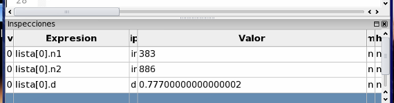

|
Parte 3: Paso 2
|
0
1
2
3
4
|
Hay dos formas de observarlas con mayor comodidad:
- Haga click sobre la misma con el botón derecho del ratón y seleccione Mostrar en tabla separada en el menú contextual. Se desplegará una nueva ventana con la estructura desplegada en una tabla.
- Haga doble click sobre el valor de la inspección en la tabla de inspecciones. Esta acción separa una inspección compuesta en múltiples inspecciones más simples (un struct en sus atributos); y puede realizarse siempre que la inspección tiene un ámbito asociado, y muestra el símbolo + precediendo su valor.

Volver... Continuar...